Accueil / Nos expertises
Nos expertises
Nos expertises
Quatre pôles complémentaires pour étudier, concevoir, réaliser et suivre vos projets en République démocratique du Congo.
Pôle 01
Environnement, climat et développement durable
Comprendre, mesurer et suivre l’état des écosystèmes afin de concilier développement et protection de l’environnement.
Demander une prestation
Nos services
- Études environnementales et diagnostics écologiques.
- Études d’impact environnemental et social, selon les exigences réglementaires applicables.
- Élaboration de plans de gestion environnementale et sociale.
- Inventaires forestiers et analyse de la couverture végétale.
- Calcul de biomasse, estimation des stocks de carbone et des émissions de CO₂.
- Appui aux projets REDD+, carbone et restauration des paysages forestiers.
- Analyse des variables climatiques et environnementales.
- Suivi de la déforestation, de la dégradation forestière et des changements d’occupation du sol.
- Sensibilisation communautaire et accompagnement des initiatives locales de protection de l’environnement.
Sur le terrain

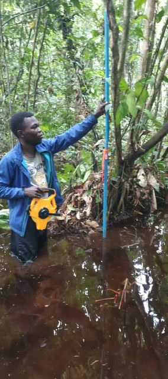

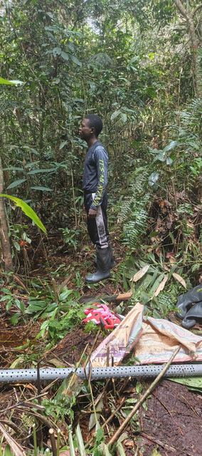

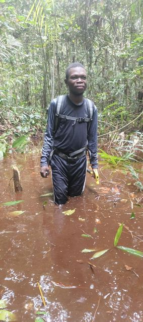

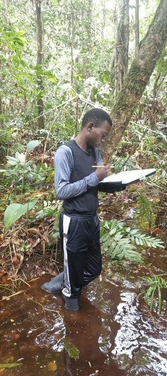

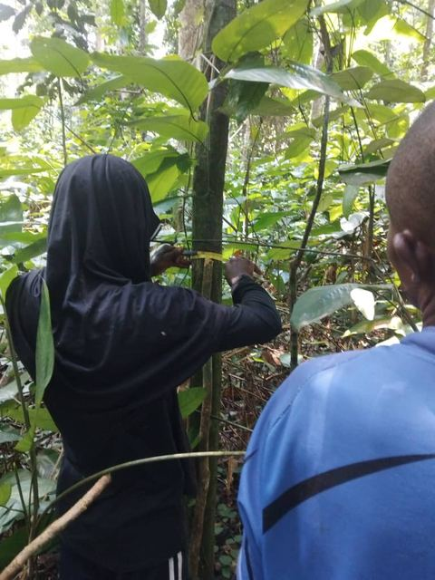

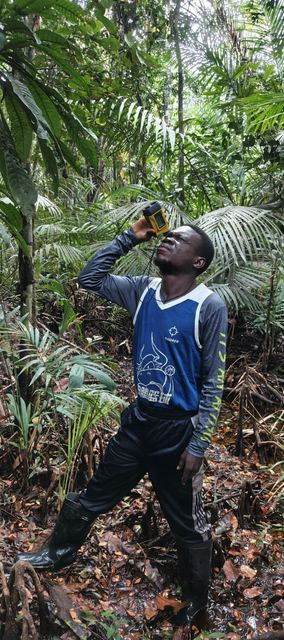

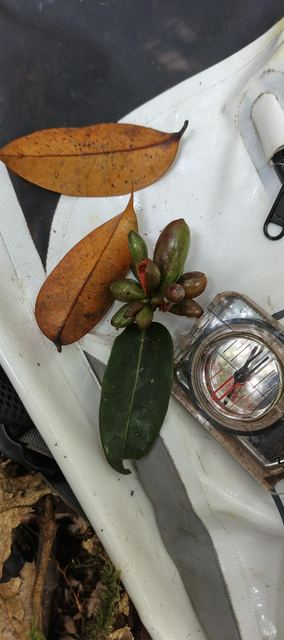

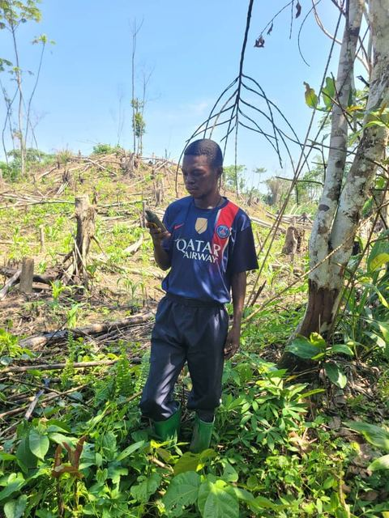
Pôle 02
Géomatique, SIG et gestion des données territoriales
Collecter, organiser, analyser et cartographier les données territoriales pour éclairer les décisions.
Demander une prestation
Nos services
- Cartographie thématique, administrative, environnementale et socioéconomique.
- Mise en place de systèmes d’information géographique.
- Acquisition, collecte et géoréférencement des données de terrain.
- Conception de formulaires numériques.
- Enquêtes numériques avec KoboCollect et d’autres outils mobiles.
- Traitement et analyse d’images satellitaires.
- Cartographie de l’occupation du sol et de l’évolution des territoires.
- Analyse spatiale pour les projets humanitaires, environnementaux, fonciers et d’infrastructures.
- Création et gestion de bases de données géographiques.
- Production de cartes, d’atlas, de tableaux de bord et de rapports techniques.
- Appui à la digitalisation des données foncières, cadastrales et communautaires.

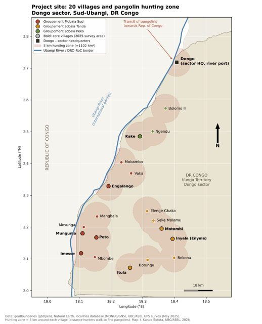

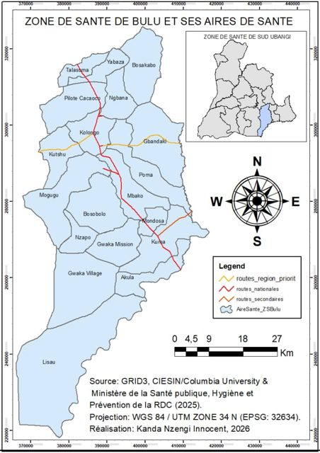

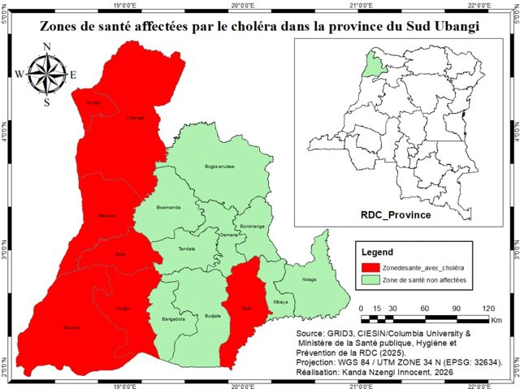

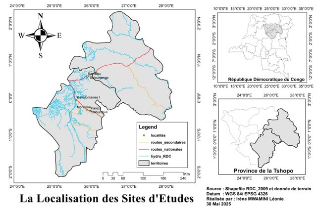


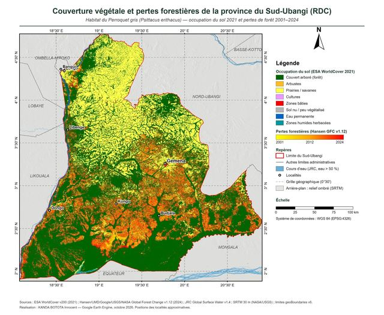

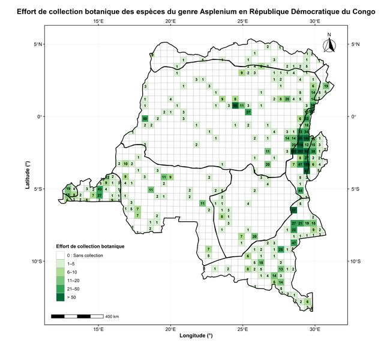

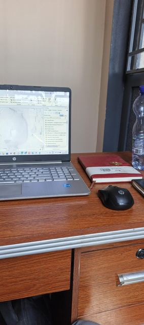

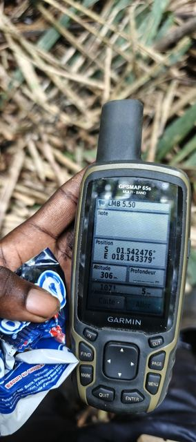

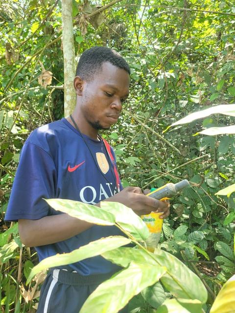
Pôle 03
Génie civil, bâtiment et infrastructures
Concevoir, étudier et suivre la réalisation de bâtiments, d’infrastructures et d’aménagements.
Demander une prestation Suivi de chantier diaspora
Nos services
- Études de faisabilité et études techniques.
- Conception architecturale et modélisation 2D/3D.
- Modélisation BIM et production de maquettes numériques.
- Études préliminaires de bâtiments et d’infrastructures.
- Élaboration de plans techniques.
- Métré, estimation des coûts et préparation des devis.
- Préparation de dossiers techniques.
- Suivi, contrôle et supervision de chantiers.
- Contrôle de la qualité des travaux.
- Études et accompagnement pour les projets de voirie, de bâtiments, d’équipements communautaires et d’aménagements.
- Diagnostic technique de bâtiments et d’infrastructures existants.

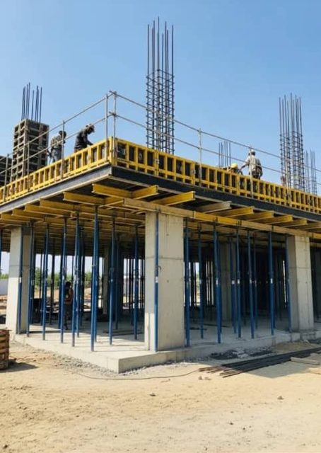


Nos chantiers, de l’implantation aux finitions

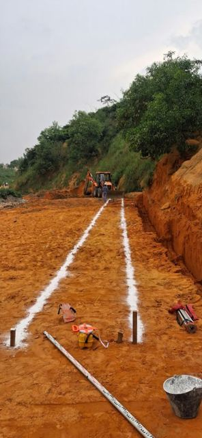

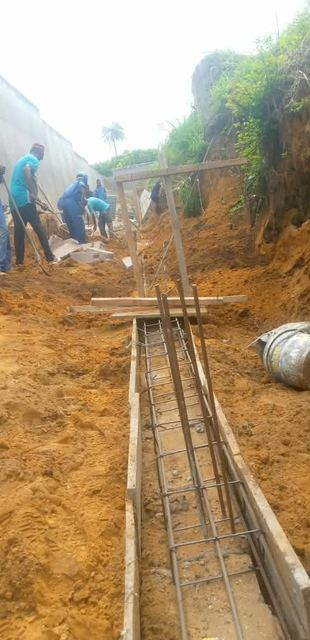

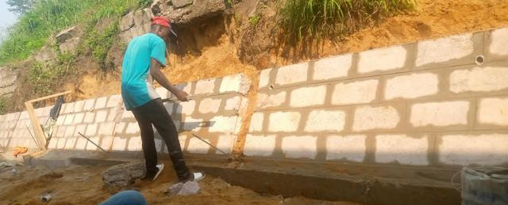

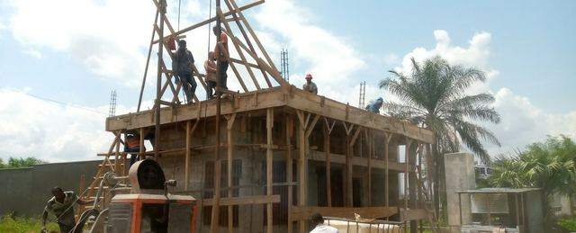

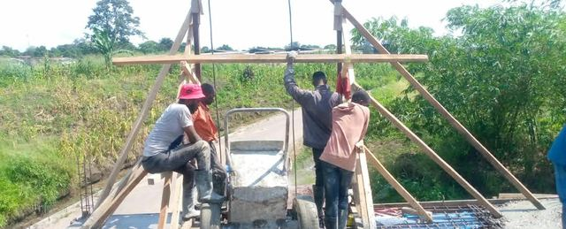

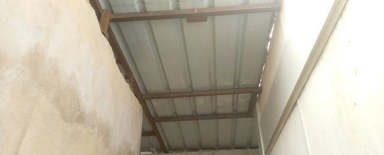

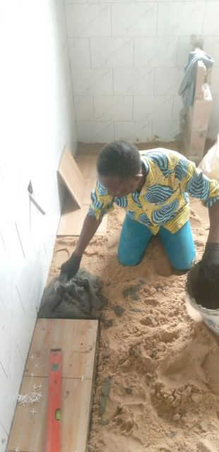

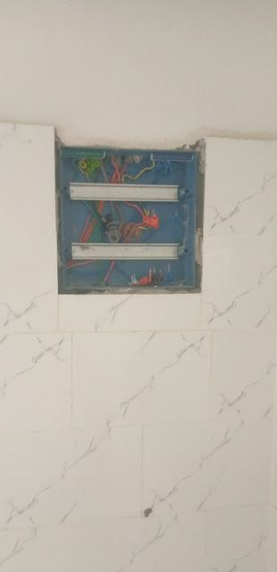

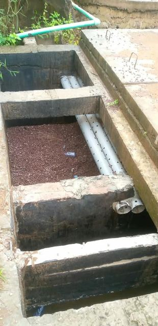
Conception et modélisation 3D

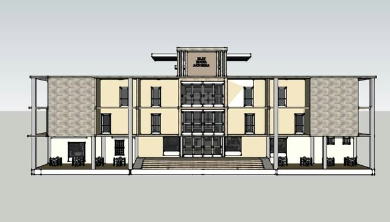

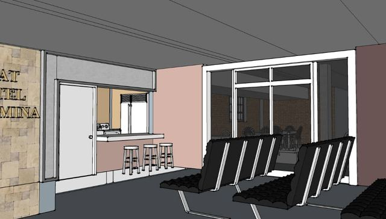

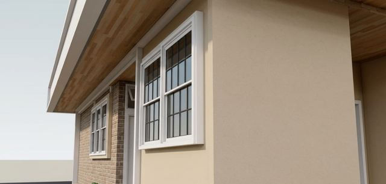

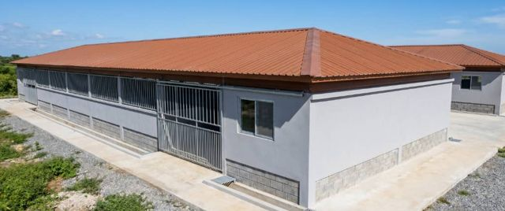

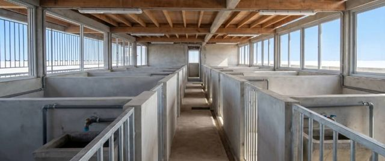

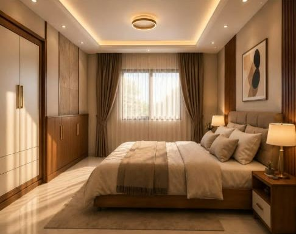
Défauts relevés lors de nos visites de chantier

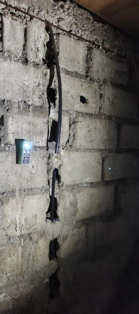

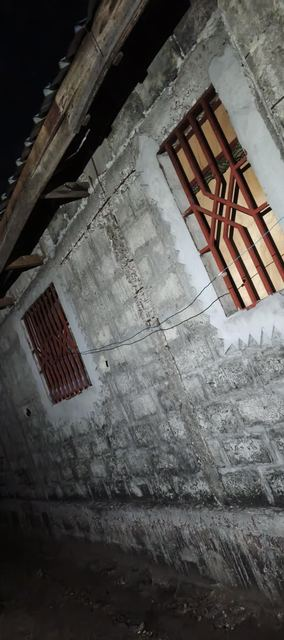

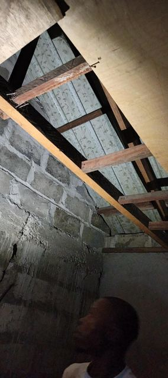

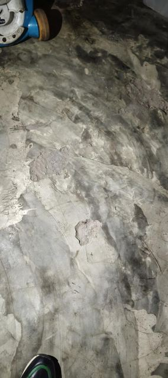

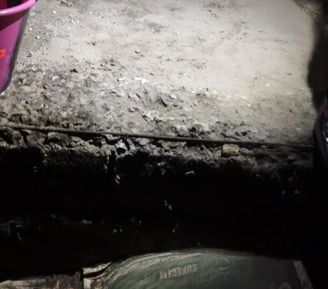

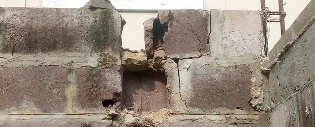

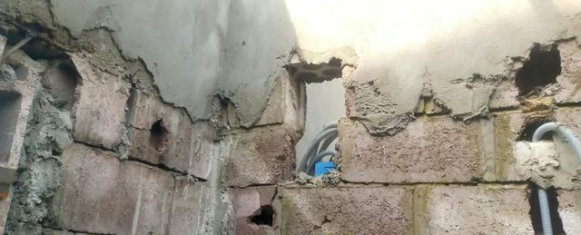

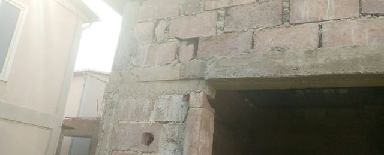
Pôle 04
Développement numérique, applications et intelligence artificielle
Concevoir des outils numériques utiles : sites, applications, plateformes de données et solutions d’intelligence artificielle.
Demander une prestation
Nos services
- Création de sites web institutionnels et professionnels.
- Développement d’applications web et mobiles.
- Création de plateformes numériques de gestion de données.
- Développement de systèmes de collecte et de suivi de projets.
- Conception de tableaux de bord interactifs.
- Automatisation du traitement, de l’analyse et de la production de rapports.
- Création de bases de données et de systèmes de gestion de l’information.
- Développement d’outils numériques pour les projets environnementaux, géomatiques et de génie civil.
- Solutions d’intelligence artificielle appliquées à la classification, à la prédiction, à l’analyse d’images et à l’aide à la décision.
- Création et gestion de pages professionnelles et solutions de communication digitale.

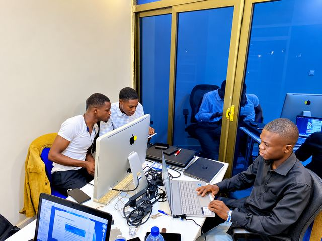

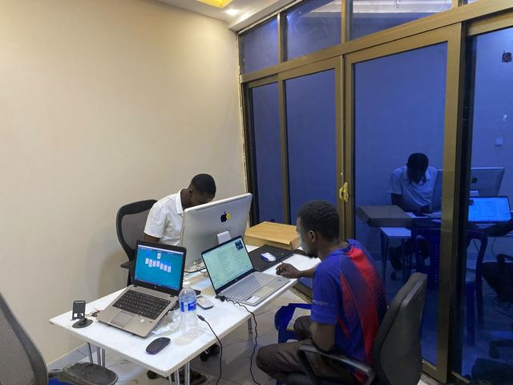

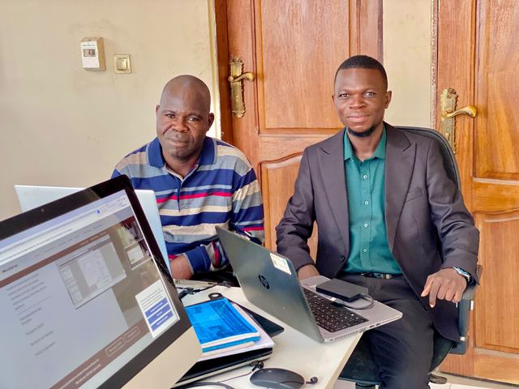
Un besoin précis dans l’un de nos pôles ?
Décrivez-nous votre projet : nous vous répondrons avec une proposition adaptée.